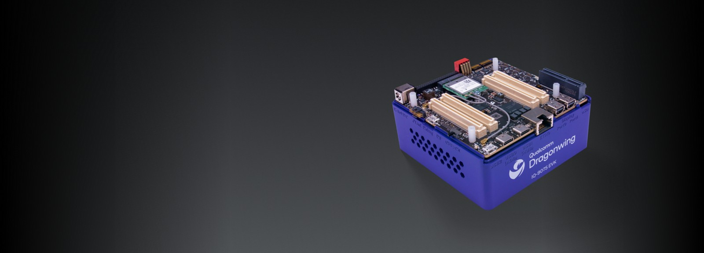

OP-TEE on Qualcomm Lemans (SA8775P / QCS9075)

Open Boot FirmwareA build system for OP-TEE on the Qualcomm Lemans EVK (SA8775P / QCS9075). Part of the OP-TEE build.git project, extended for this platform to enable TZ open firmware development. Work from this repository is being upstreamed to the public OP-TEE repositories.
Note: This is an active development build system; interfaces,
manifest revisions, and flash procedures may change as the work lands upstream.
When this documentation and
lemans.mk disagree, trust the makefile.